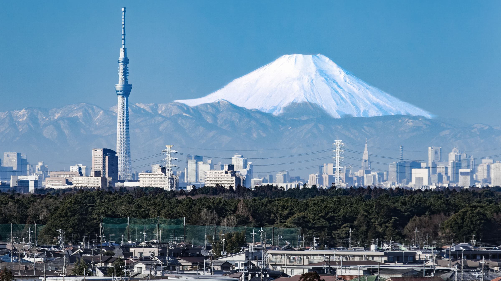

О городе
Токио – столица Японии, город в юго-восточной части острова Хонсю, на берегу Токийского залива Тихого океана. Численность населения Токио превышает отметку в 13 миллионов человек.
Гиндза
Один из самых известных, веселых и шумных районов Токио – Гиндза. Это слово переводится как «монета». Квартал получил свое название благодаря Монетному двору, где с XVII по XIX век чеканились японские серебряные монеты.